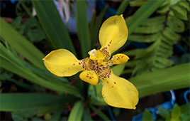
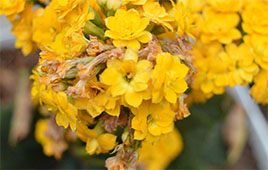
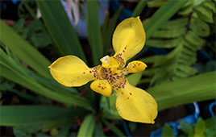
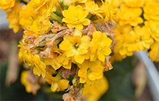
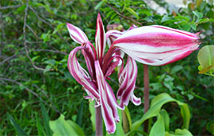
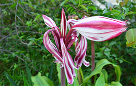

Photography
I like my environment and to see what it offers me, in the history of each person, space and object I want to show unique details and capture the essence of something truly special.
I have taken pictures of flowers, green spaces, people, events, presentations, landscapes and more.

In green areas there is a lot of diversity and I like to frame it in my lens, I see plants and small animals that are the targets in the photographs.

I portray disability, I have learned a lot from it, the human being is very complex and I hope that the image will be used to show how capable they are.

There is also a lot of diversity in the landscapes of Colombia, I capture images of the rivers, lakes, seas, sky, mountains, fauna and the beautiful flora of our country.
I go out with my camera and take photos, I start to see details in everything, I think that is a lot to discover outside, see, analyze and save.
I can portrait nature and everything in it, Colombia gives us many species of plants to enjoy and appreciate them.
 



 
